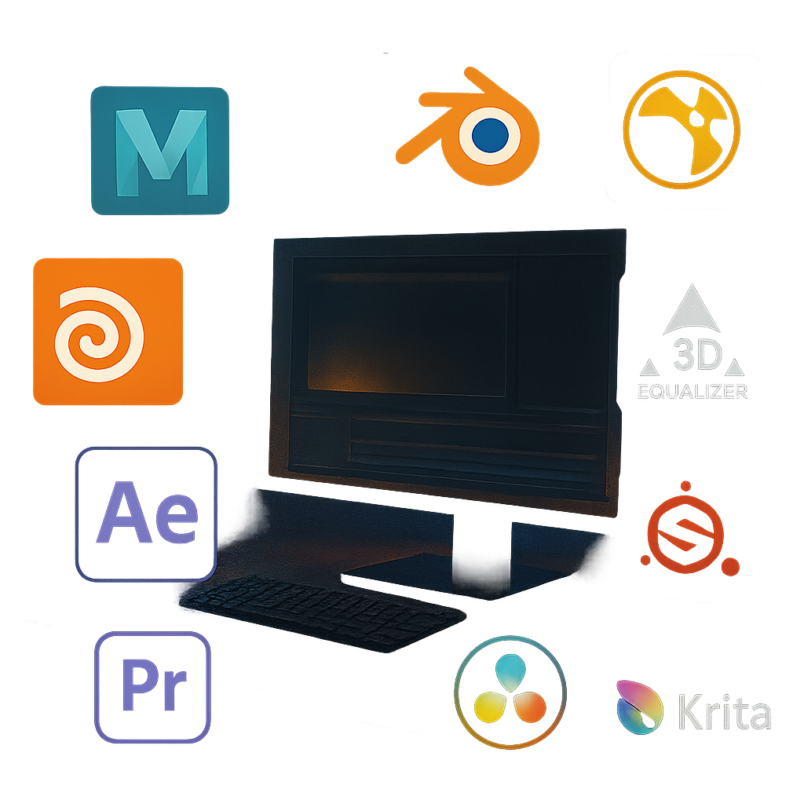

Visual Storytelling, Cinematography & Lighting Design
As both a Director of Photography and Lighting Technician, I craft visuals that balance storytelling, mood, and technical precision. I approach each scene as a visual puzzle using light, framing, and movement to serve the emotional intent of the story. Whether working with natural daylight or constructing stylized setups, I focus on depth, contrast, and tone to bring cinematic texture to every frame.
On set, I collaborate closely with directors, gaffers, and camera crews to design efficient lighting plans, manage exposure, and achieve a consistent visual language across shots.
Core Skills: Camera operation (Sony/Blackmagic), lighting design, exposure control, composition, lens choice, practical FX lighting, on-set collaboration, production planning.
FX Simulation & Compositing
I specialize in crafting dynamic visual effects that blend seamlessly into live-action plates. From fire, smoke, and debris simulations to water, destruction, and energy effects, I bring physical accuracy and dramatic flair to each shot. My compositing workflow focuses on integrating these effects believably — balancing color, perspective, and light interaction to achieve photo-real results.
Working across Houdini, Nuke, and After Effects, I develop procedural systems and multi-pass composites to enhance realism and storytelling impact.
Core Skills: FX simulation (fire, smoke, destruction, fluid), 3D/2D compositing, lighting integration, rendering passes, keying, cleanup, digital matte work, tracking and projection.
VFX & 3D Production
From modeling to matchmove, I manage the full 3D pipeline — ensuring continuity between practical and digital worlds. My work covers asset creation, texturing, animation, tracking, paint, and roto, with a focus on detail and accuracy. Whether developing realistic props or complex camera solves, I aim to make CG elements feel grounded in their environment.
Using tools like Maya, Substance Painter, Blender, and 3D Equalizer, I combine technical precision with artistic sensibility, maintaining production efficiency without sacrificing visual integrity.
Core Skills: Modeling, UVs, texturing, shading, animation, camera tracking, matchmove, paint, roto, projection cleanup, lookdev.
Post-Production
Post-production is where the story comes alive. I bring a structured, narrative-driven approach to editing, sound, and color, ensuring pacing, emotion, and visual rhythm align with the director’s intent. My color work focuses on tone continuity, contrast control, and cinematic stylization, while my audio integration emphasizes clarity and atmosphere.
From offline edits to final delivery, I manage pipelines that maintain quality, organization, and creative flow across platforms and formats.
Core Skills: Editing (Premiere Pro, Resolve), sound editing and design, color grading, motion graphics, conform and delivery, post-production workflow design.
Technical Direction & Workflow
Behind the artistry, I build efficient pipelines that keep creative teams aligned and productive. I’m experienced in data wrangling, project structure, and troubleshooting across multiple departments — from on-set capture to post-delivery. My focus is always on enabling creative freedom through solid technical foundations.
Core Skills: Workflow optimization, media management, cross-department coordination, VFX pipeline setup, software integration, troubleshooting
Creative Collaboration & Leadership
I thrive in collaborative environments where ideas evolve through teamwork. Whether leading a small crew or supporting a large production, I prioritize clear communication, adaptability, and problem-solving. My leadership philosophy is built on respect, preparation, and the drive to create something meaningful together.
Core Skills: Crew management, on-set leadership, mentoring, communication, creative direction, adaptability.

Technical Toolkit
Maya • Houdini • Unreal Engine • Nuke • After Effects • DaVinci Resolve • Premiere Pro • Substance Painter • Blender • Photoshop • 3D Equalizer • Silhouette